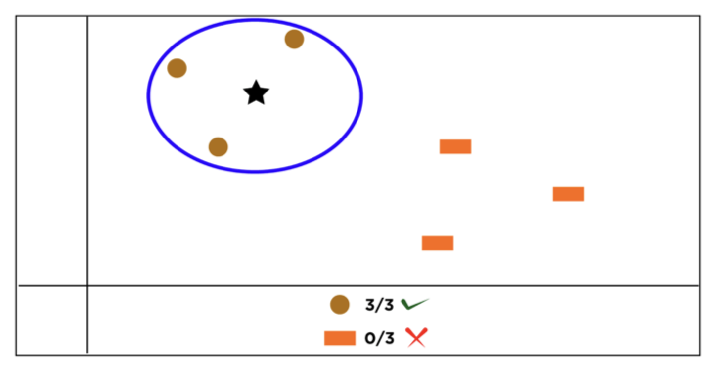
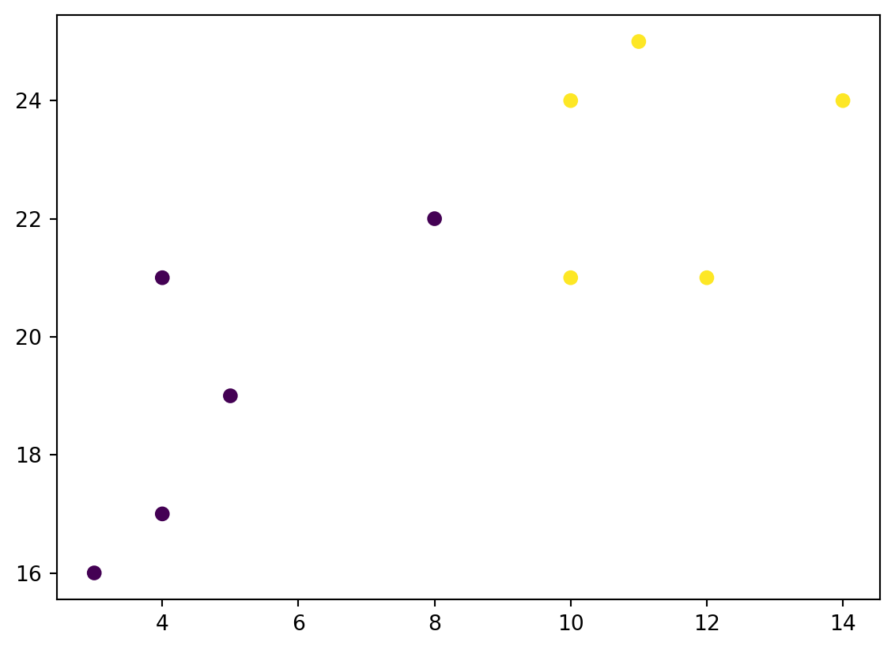
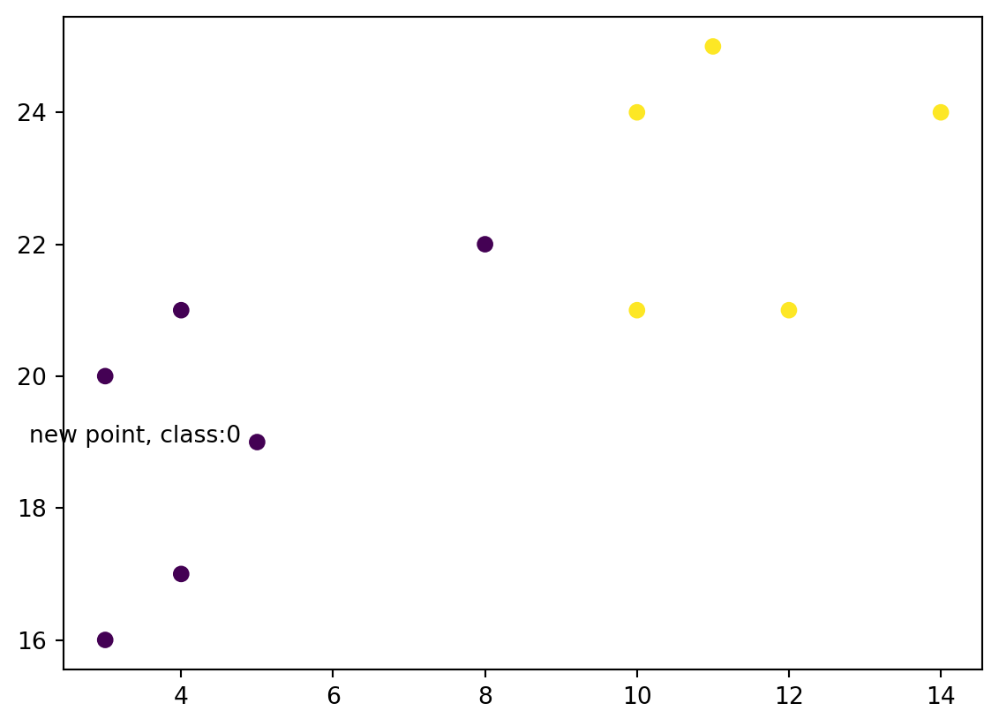
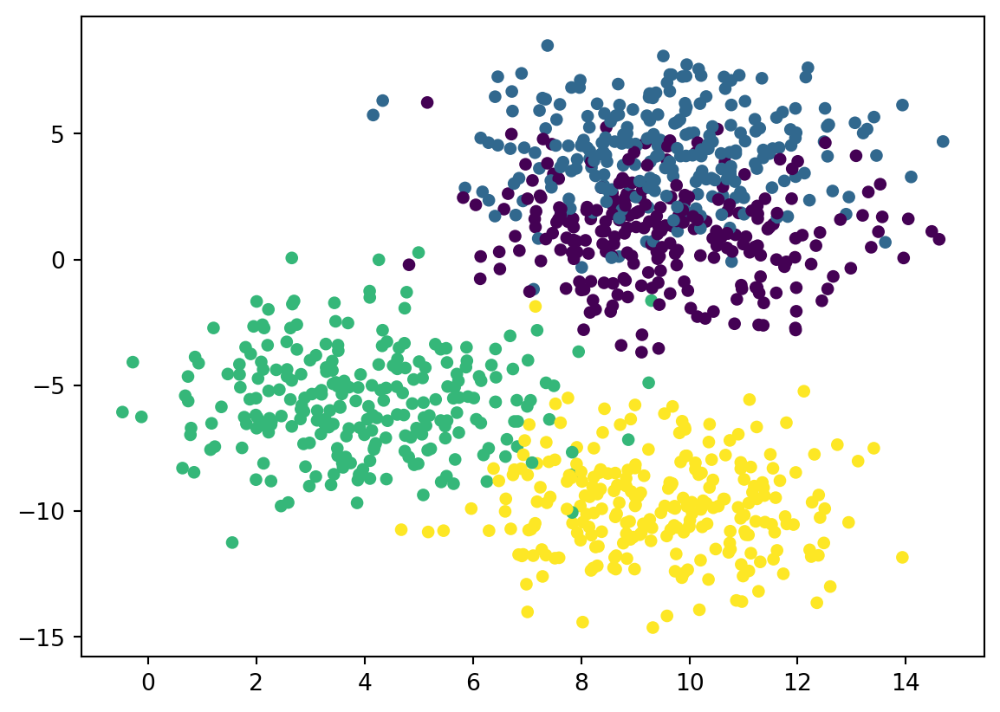
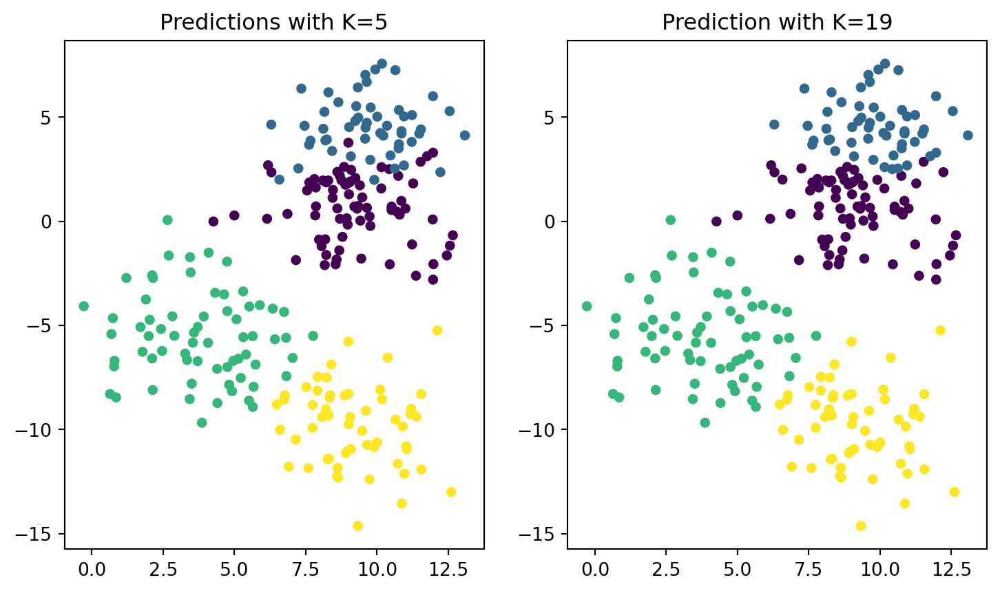

Some very basic ML using KNN and python and the tidymodel framework.
Introduction
KNN stands for K Nearest Neighbor.
KNN is not really a machine learning techniques in the sense that it trains a model. In the case of KNN, there is no training. We are waiting for test data to see what label (or value) will the the new data will get. We then say that KNN is a lazy learner (as opposed to eager learners like SVM or RF). Nonetheless, it is a supervised ML algorithm that can be used for both classification and regression. The intuition behind the model is that observations that are closed to each other (close in terms of distance in a hyperplane) have similar labels (classification) or values (regression).
As mentioned, there is no training phase when using KNN. Instead, there is only prediction.
We take an observation and check the K observations next to it. We check the label of the K observations next to our data to be labeled and using a majority voting system we assign the label. For regression, it calculates the average or weighted average of the target values of the K neighbors to predict the value for the input data point.

KNN illustration
Looking at the above image, we can see that, using k=3, the 3 observations closest to the star (our data to be classified) are all brown circle. Hence we should classify the star as a brown circle instead of an orange rectangle.
Scaling
Because KNN use distance, it is important to scale the data as a pre-processing steps. Otherwise, features with big scale (let’s say price) will skew the distance against features with lower scale (let’s say percentage).
Pros-Cons of KNN
Pros
Easy to understand intuition, mathematics (Euclidean Distance)
KNN is non-parametric. It’s not making any assumptions on the the type of distribution of the data
<matplotlib.collections.PathCollection at 0x15b8618b0>

Now let’s create a KNN object and a new point
from sklearn.neighbors import KNeighborsClassifierknn = KNeighborsClassifier(n_neighbors =3)knn.fit(list(zip(x, y)), classes)new_x =3new_y =20new_point = [(new_x, new_y)]prediction = knn.predict(new_point)plt.scatter(x + [new_x], y + [new_y], c = classes + [prediction[0]])plt.text(x = new_x-1, y = new_y-1, s =f"new point, class:{prediction[0]}")
Text(2, 19, 'new point, class:0')

Example with synthetic data
from sklearn.datasets import make_blobsfrom sklearn.neighbors import KNeighborsClassifierfrom sklearn.model_selection import train_test_split# create our synthetic dataX, y = make_blobs(n_samples =1000, n_features =2, centers =4, cluster_std =1.9, random_state =4)# visualizing the dataset plt.scatter(X[:,0], X[:,1], c = y, s =20)
<matplotlib.collections.PathCollection at 0x28065c9a0>

Splitting our dataset into training & testing + running KNN on the data
# spliting our data into training and testingX_train, X_test, y_train, y_test = train_test_split(X, y, random_state =0)knn5 = KNeighborsClassifier(n_neighbors =5)knn19 = KNeighborsClassifier(n_neighbors =19)# fit our 'model' with either '5' or '19' Nearest Neighborsknn5.fit(X_train, y_train)knn19.fit(X_train, y_train)# apply prediction on our test sety_pred_5 = knn5.predict(X_test)y_pred_19 = knn19.predict(X_test)from sklearn.metrics import accuracy_scoreprint('Accuracy with K = 5 is', round(accuracy_score(y_test, y_pred_5)*100, 2), '%')print('Accuracy with k = 19 is', round(accuracy_score(y_test, y_pred_19)*100, 2), '%')
Accuracy with K = 5 is 87.6 %
Accuracy with k = 19 is 89.6 %
Let’s visualize both ‘models’ and the impact of the choice of K.
#using subplots to compareplt.figure(figsize = (9, 5))# first subplotplt.subplot(1, 2, 1)plt.scatter(X_test[:, 0], X_test[:, 1], c = y_pred_5, s=20)plt.title('Predictions with K=5')# second subplotplt.subplot(1, 2, 2)plt.scatter(X_test[:, 0], X_test[:, 1], c = y_pred_19, s=20)plt.title('Prediction with K=19')
Text(0.5, 1.0, 'Prediction with K=19')

Because the data are already pretty well separated, the only changes we see easily are the ones in the junction between the blue and purple dots.
Example with the adult dataset (from Kaggle)
import numpy as npimport pandas as pddata = pd.read_csv('../../../raw_data/adult.csv')data.head()
age
workclass
fnlwgt
education
educational-num
marital-status
occupation
relationship
race
gender
capital-gain
capital-loss
hours-per-week
native-country
income
0
25
Private
226802
11th
7
Never-married
Machine-op-inspct
Own-child
Black
Male
0
0
40
United-States
<=50K
1
38
Private
89814
HS-grad
9
Married-civ-spouse
Farming-fishing
Husband
White
Male
0
0
50
United-States
<=50K
2
28
Local-gov
336951
Assoc-acdm
12
Married-civ-spouse
Protective-serv
Husband
White
Male
0
0
40
United-States
>50K
3
44
Private
160323
Some-college
10
Married-civ-spouse
Machine-op-inspct
Husband
Black
Male
7688
0
40
United-States
>50K
4
18
?
103497
Some-college
10
Never-married
?
Own-child
White
Female
0
0
30
United-States
<=50K
Doing some cleaning of data. All the cleaning ideas come from the Kaggle notebooks (I have not deeply analysed the data)
# in a few columns, many cells have '?', let's replace those with Nandata['workclass'] = data['workclass'].replace('?', np.nan)data['occupation'] = data['occupation'].replace('?', np.nan)data['native-country'] = data['native-country'] .replace('?', np.nan)df = data.copy()# dropping row with NAdf.dropna(how ='any', inplace =True)# dropping dupplicates rowsdf = df.drop_duplicates()# drop columns